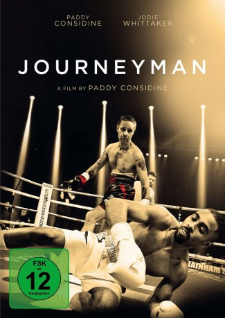

#9728 Journeyman
 
 IMDB-Wertung: 7.2 / 10
IMDB-Wertung: 7.2 / 10  Tomatometer: 82
Tomatometer: 82  Metascore: 72
Metascore: 72 
Matty Burton hat sein Ziel erreicht: Er ist amtierender Champion im Halbschwergewicht. Im Zenit seiner Karriere gilt es nun, das Geld zu verdienen, das ihm und seiner Familie eine sorgenfreie Zukunft bescheren soll. Mit einem letzten Kampf gegen Andre „The Future“ Bright will er seiner Karriere den letzten Schliff verleihen und anschließend mit dem Preisgeld gebührend abtreten. Nach einem erbitterten letzten Fight kehrt Matty heim und verliert kurz darauf infolge der heftigen Schläge das Bewusstsein. Als er kurze Zeit später im Krankenbett aus dem Koma erwacht, lautet die Diagnose: Gedächtnisverlust. Nach und nach muss Matty die Lücken seiner Erinnerung wieder füllen und merkt, dass sein wichtigster Kampf wohl grade erst begonnen hat ...
Jahr: 2017
Dauer: 92 Minuten
FSK:
Land: England Studio: September FilmTonspuren: DTS - ,
Untertitel: Deutsch,
Auflösung: 1080p (1920x808) Größe: 6778 MB
Genre: Drama, Sport
Regisseur: Paddy Considine
Drehbuch: Paddy Considine
Soundtrack: Harry Escott
Darsteller:
 Paddy Considine als Matty Burton
Paddy Considine als Matty Burton Jodie Whittaker als Emma Burton
Jodie Whittaker als Emma Burton Paul Popplewell als Jackie
Paul Popplewell als Jackie Tony Pitts als Richie
Tony Pitts als Richie Anthony Welsh als Andre Bryte
Anthony Welsh als Andre Bryte- Gareth Davies als Journalist 1
- Jonathan Cheetham als Press officer / boxing match VIP (uncredited)
- Tammy Hartley-Cain als Boxing Match Crowd (uncredited)
- Stephen Seal als Boxing Ring Official (uncredited)
- Darren Whitfield als Press Photographer (uncredited)
- Brendan Ingle als Robin Burton
- Matt Insley als Matt not Matty
- Lexie Duffy als Mia
- Lainie Duffy als Mia
- Francis Warren als Boxing Promoter
- Junior Witter als Andre's Trainer
- Simon Burgan als Andre's Cornerman
- Greg Marriott als Andre's Nutritionist
- Matt Christie als Journalist 2
- Mike Goodall als Emcee
- Steve Bunce als Boxing Interviewer
- Ralph Caffell als Whip
- Paul Donnelly als Referee
- Lucy Hughes als Physiotherapist 1
- Jane Gilmartin als Physiotherapist 2
- Issam Rehahla als Barber
- Barry Jones als Boxing Commentator 1
- John Rawling als Boxing Commentator 2
- Samantha Anderson als Speech Therapist
- Atif Shafiq als Boxer in Barber 1
- Jordan Gill als Boxer in Barber 2
- Kell Brook als Boxer at Benefit Dinner
- Kris Athey als VIP Boxing Spectator (uncredited)
- Danielle Hanson als Ring Girl (uncredited)
- Craig Thomas Lambert als VIP (uncredited)
- Steven Langfield als Boxing Spectator (uncredited)
- Jonny Masters als Journalist (uncredited)
- Nigel Passey als VIP Spectator (uncredited)
- Jacob Smyth als Boxing Match VIP (uncredited)
- Richard Varley als Boxing spectator (uncredited)
- Richard Waring als Boxing Match Spectator / Charity Ball Guest (uncredited)
Datei: X:\2017(G-M)\Journeyman (2017, FSK, 1920x808).mkv seit 11.10.2018
Festplatte: HD 2017(A-Z)-2018(A-F)
 Es gibt insgesamt 148 Filme in der Gruppe '2017(G-M)'
Es gibt insgesamt 148 Filme in der Gruppe '2017(G-M)'